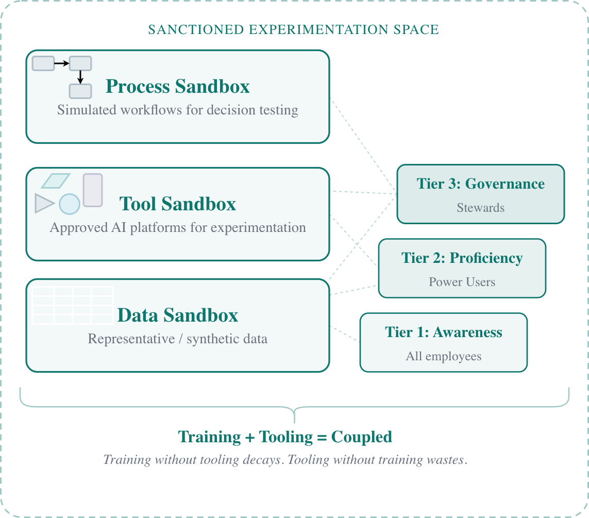

You can build the best AI upskilling program in your industry. If people can't exercise that new muscle, it will atrophy, and quickly!
I see this pattern constantly. An organization invests heavily in training — workshops, bootcamps, e-learning modules, lunch-and-learns. Attendance is strong. Satisfaction scores are high. People leave feeling energized, full of ideas about how AI could transform their work. Six months later, fewer than 10% have applied any of it. Not because the training was bad. Because there was nowhere to practice.
In the last article, I argued that restrictive AI governance drives use underground, breaking the organizational learning loop. But there's an equally common failure mode that's less visible and arguably more wasteful: training people on tools they're never given access to use.
The Transfer Gap
Donald Kirkpatrick's four-level training evaluation model has been the standard framework since the 1960s. The four levels are straightforward: Reaction (did they like it?), Learning (did they acquire knowledge?), Behavior (did they apply it on the job?), and Results (did it produce business outcomes?). Most organizations measure the first two and declare success. The critical gap is between Level 2 and Level 3 — between knowing and doing.
Baldwin and Ford's seminal 1988 research found that roughly 10% of training content transfers to actual job performance. Ten percent. That finding has held up remarkably well. Blume et al.'s 2010 meta-analysis of 89 empirical studies confirmed that one of the strongest predictors of whether training transfers is a supportive work environment — meaning the opportunity, encouragement, and infrastructure to apply what was learned.
The message is clear: without opportunity to apply, training decays. This isn't controversial in the learning sciences. It's been established for decades. Yet organizations continue to invest in AI awareness programs while providing no sanctioned environment where that awareness can become competence.
The Mirror Failure
But there's an equally damaging failure running in the opposite direction. Organizations deploy AI tooling — however capable or restrictive — without investing in upskilling. Users underutilize tools they don't understand. They misapply them in ways that erode trust. Or they distrust them entirely and route around them.
BCG's 2025 survey of more than 10,000 employees found that only 36% were satisfied with their AI training, and 18% of regular AI users reported receiving no training at all. McKinsey found that 48% of employees rank training as the most important factor for AI adoption — and nearly half report receiving minimal or none.
And in most organizations, the two investments are managed by entirely different groups who rarely coordinate.
The Sandbox as Bridge
The solution isn't better training or better tools in isolation. It's coupling them. A sanctioned experimentation environment — a sandbox — provides the missing link between learning and application. Not as infrastructure alone, though it requires infrastructure. As organizational commitment. A sandbox says: we trust you enough to let you try.
Three types, each serving a different need:
Data sandbox. Work with representative or synthetic data sets — realistic enough to be useful, protected enough to eliminate governance risk. A process engineer learning to use AI for trend analysis needs actual process data to learn against, not a generic tutorial dataset.
Tool sandbox. Approved AI platforms where practitioners can experiment. The learning happens by doing, not by watching a demonstration and hoping to remember it three months later when access finally arrives.
Process sandbox. Simulated workflows where AI-assisted decisions can be tested before they touch anything regulated. A quality analyst can explore how AI summarization handles deviation language without that output ever entering a quality system.
Each has clear boundaries and escalation paths. The sandbox isn't a free-for-all — it's structured experimentation with governance built in. The boundaries are what make it safe enough to be sanctioned.

Learning by Doing
The most effective upskilling isn't lecture-based. It's participation-based — learning by doing within a sanctioned environment, not learning in a classroom and then hoping for access weeks or months later. The best training programs don't separate learning from application. They make application the learning.
This is where the sandbox becomes more than infrastructure. It becomes pedagogy. When training is delivered inside the same environment where work will eventually happen, the transfer gap between Kirkpatrick's Level 2 and Level 3 narrows dramatically. The practitioner isn't learning abstract concepts and then trying to map them to their context. They're building competence in context from the start.
This also changes what training looks like. Instead of a two-day workshop followed by months of waiting for tool access, you get iterative cycles: learn a concept, try it in the sandbox, see what happens, refine. The sandbox provides the feedback loop that classroom training cannot.
The Governance Question
Training and tooling must be coupled. One without the other is organizational waste — expensive, visible enough to feel productive, ineffective enough to change nothing. But tooling without governance is reckless. A sandbox without clear boundaries, escalation paths, and knowledge capture mechanisms is just another vector for uncontrolled experimentation.
Which raises the question that neither training programs nor technology deployments answer on their own: who owns this? Who ensures the sandbox stays bounded? Who makes sure experiments that show promise escalate appropriately into validated workflows? Who documents what works so the next practitioner doesn't start from zero?
That's the subject of the final article in this series — a governance model built not around centralized control, but around domain expertise embedded where the work actually happens.
I'm curious: has your organization closed the gap between AI training investment and actual tool access? Or are you training people for tools they can't touch?